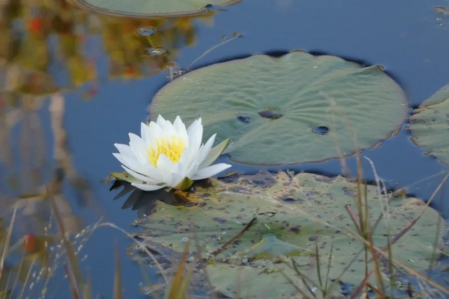

水生植物 · 植物界
白睡莲 Nymphaea alba

睡莲科睡莲属多年生水生草本，叶片浮于水面，花白色、清晨开放，是池塘与园林水景中最经典的水生花卉之一。
- 分类
- 门被子植物门纲木兰纲目睡莲目科睡莲科属睡莲属
- 栖息环境
- 静水池塘、湖泊与缓流河湾，喜阳光充足、水质清洁
- 地理分布
- 原产欧洲、北非与西亚；中国各地水景园广泛栽培
- 保护级别
- IUCN 暂无评估；栽培广泛，部分地区野生种群受湿地减少影响
物种志
白睡莲为多年生水生草本，具粗壮的根状茎，横生于水底泥中。叶片浮于水面，近圆形或卵圆形，直径 15–30 厘米，基部具深缺刻，上面深绿色，下面带紫红色。花单生，浮于水面或稍挺出，白色，直径 10–15 厘米，花瓣多数，花蕊黄色，清晨开放、午后渐合，单花可开 3–5 天；果实为海绵质浆果，种子沉入水底。
本种原产欧洲、北非与西亚，生于静水池塘、湖泊与缓流河湾，喜阳光充足、水质清洁的环境。它是欧洲最经典的水生花卉，19 世纪起被广泛用于园林水景，并杂交出众多睡莲品种。白睡莲的根状茎可入药，有安神、收敛之效；叶片能遮阴降温，帮助净化水质。栽培时需保持 30–80 厘米水深，并定期清除过密叶片，以免影响开花。
形态与习性
- 花期6–9 月，花白色、清晨开放
- 叶浮水，近圆形，直径 15–30 厘米
- 水深30–80 厘米的静水或缓流水体
- 光照强阳性，每天需充足直射光
- 水分生于静水，忌流水冲刷
- 土壤富含腐殖质的塘泥
- 主要用途园林水景、池塘绿化与根茎入药
趣味知识
- 白睡莲的花清晨开放、午后渐合，单朵花可以重复开合三到五天。
- 它的叶片基部有一个深缺刻，这是睡莲属与荷花属最直观的区别之一。
- 白睡莲是欧洲园林水景的经典植物，19 世纪起被大量杂交培育。
- 它的根状茎横卧水底泥中，叶片和花梗都从根状茎上抽出。